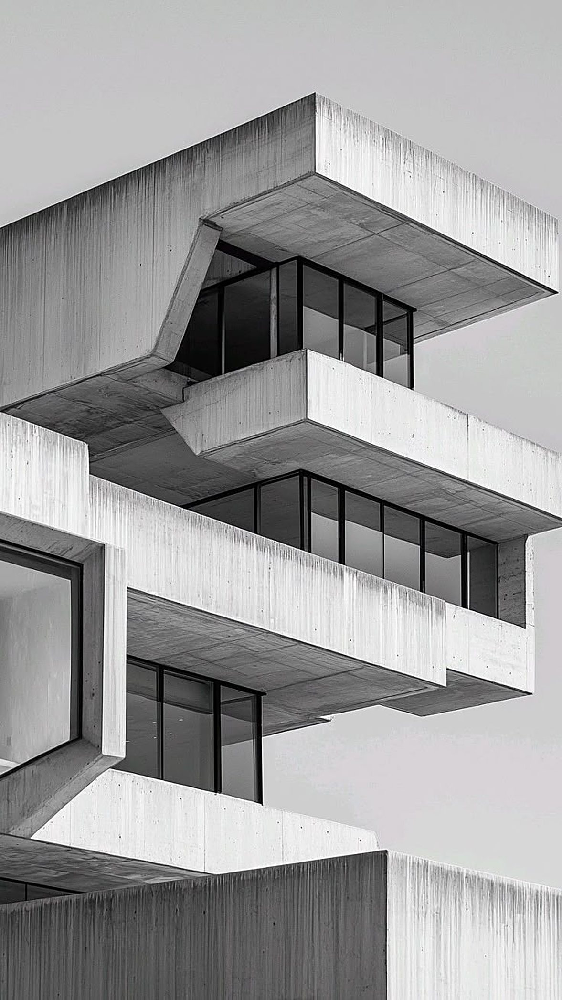

Felswil, 2025
Haus im Hang
Das Grundstück war steil, schmal und galt als kaum bebaubar. Wir haben den Hang nicht abgegraben, sondern das Haus in drei versetzten Geschossen an ihn gelehnt. So hat jedes Zimmer freie Sicht ins Tal, und der Garten bleibt fast unberührt.
- Bauweise
- Sichtbeton, Holzfenster
- Fläche
- 240 m²
- Leistung
- Entwurf bis Bauleitung
